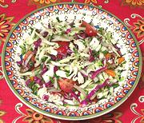

|
Cabbage & Watercress SaladSpain - Canary Islands - Ensalada de Repollo y Berros | ||||
| Serves: Effort: Sched: DoAhead: |
5 salad ** 40 min Most |
A delicious salad typical of Spain's Canary Islands, but deserving to be a regular in everyone's salad repertory. If making more than 2 hours ahead, see Do-Ahead. | |||
|
|
3 4 1-1/2 8 4 6 1 ------ 2 1/4 1/3 1/4 |
oz oz oz oz oz oz T --- T c t t |
Watercress Onion, sweet Carrot Cabbage, white Cabbage, red Cherry Tomatoes Cilantro -- Dressing Lemon Juice Olive Oil ExtV Salt Pepper |
Prep - (40 min - 20 min work)
|